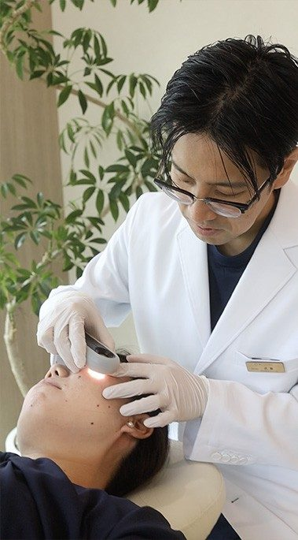
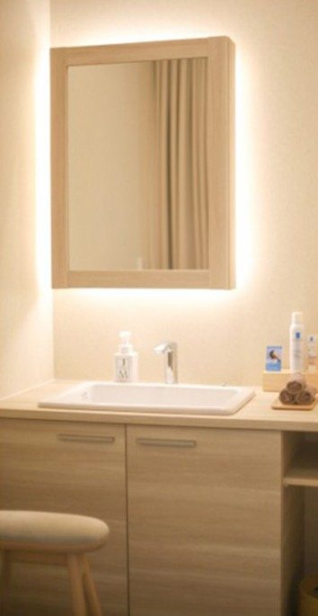
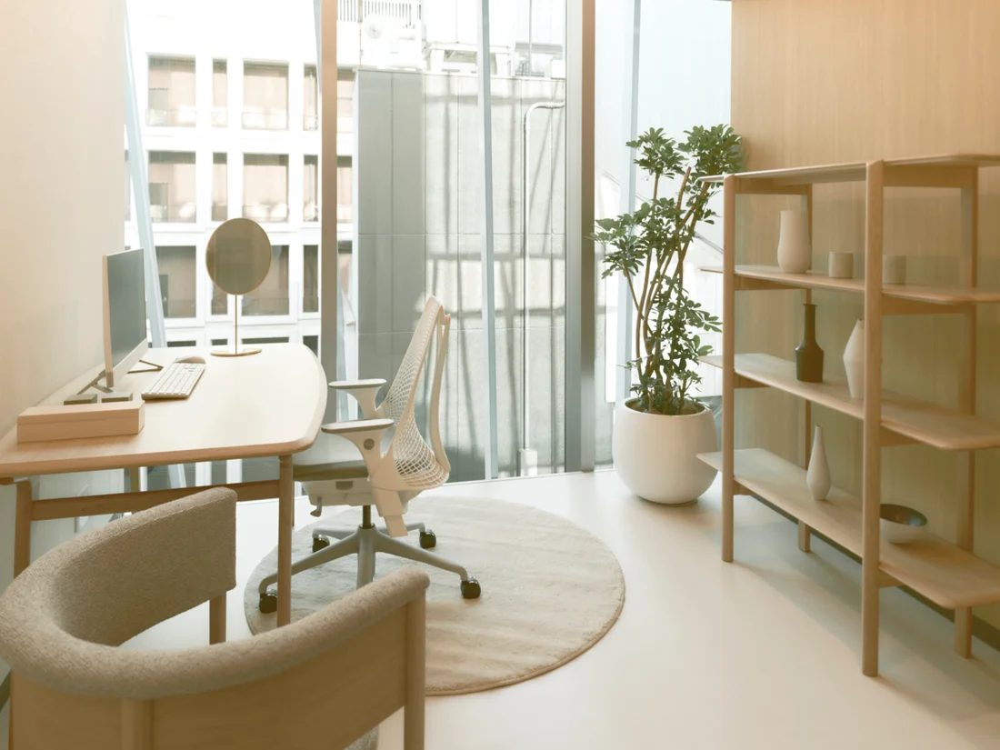
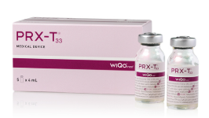
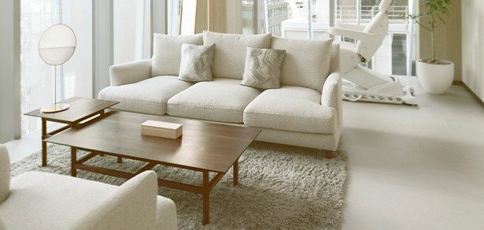

01
医師が、肌を直接診ます
気になる部分だけでなく、肌全体の状態も確認します。これまでの治療やスキンケア、服用中のお薬も伺います。
デザイン案（WA CLINIC 社内確認用）｜仮 の項目は院と確認中の内容です
治療を決めていなくても大丈夫。
医師が肌を診て、VISIAで肌の状態を記録しながら、
一緒に考えます。

気になっていること、
まずは聞かせてください。WA CLINIC 院長 武藤 文之介
まとまっていなくても、ひとことからで大丈夫です。
施術名が分からなくても、
悩みをそのままお話しください。
無料肌相談でできることは、この3つです。

気になる部分だけでなく、肌全体の状態も確認します。これまでの治療やスキンケア、服用中のお薬も伺います。
肌診断機VISIAで撮影し、シミや赤み、毛穴などの状態を画像で確認します。見た目だけでは分かりにくい部分も、医師と一緒に見ていきます。
※図はイメージです
治療の候補と順番、回数や間隔の目安、費用をお伝えします。ご予算や通院のペース、ダウンタイムのご希望もお聞かせください。
撮影した画像から、肌の状態を項目ごとに確認します。
VISIAは肌の状態を撮影・解析する機器です。治療の判断は、画像も参考にしながら医師が行います。
肌を診て、データで確かめてから、プランを考えます。





無理な勧誘や、不要な施術のおすすめはいたしません。
ご提案を持ち帰って、ゆっくりご検討ください。
WA CLINICの治療メニューです（公式サイト掲載）。
施術ではなく、ホームケアや内服から始めるご提案をする場合もあります。
初回体験を用意している治療



お悩みから見る
すべての治療メニュー
公式サイトで治療メニューを見る ↗緑の枠は、初回体験を用意しているメニューです。治療の適応は、医師が診察で判断します。自由診療のため、医療保険は適用されません。
相談にかかる費用と、受けられる内容です。
自由診療・税込表示。仮 の項目は院と確認中です。
WA CLINIC 院長
武藤 文之介Bunnosuke Muto, M.D.
「美しさは、健康の上にしか成り立たない」
今、気になっていること。これまでに受けてきた治療。これから、どのような肌を目指したいか。肌の状態だけでなく、ご希望や生活のペースも伺いながら、治療の進め方を一緒に考えます。
光とグリーンに包まれた、落ち着いた院内です。

医師の診察・カウンセリング、VISIA肌診断、治療プランと費用のご説明までが無料です仮。施術・お薬・化粧品は別途費用がかかります。受ける場合は、事前に内容と費用をご説明します。
はい。治療をその場で決める必要はありません。ご提案を持ち帰って、ご検討いただけます。
ご予約いただけます。施術名が分からなくても、気になっていることをそのままお話しください。
ご相談いただけます。受けた施術の種類と時期、現在の肌の状態を伺い、今後の進め方をご説明します。
大丈夫です。VISIAで撮影する前に、院内でメイクを落としていただきます。
ご希望の場合はご相談ください。医師の判断と施術枠の空き状況によります。
男性もご相談いただけます。

治療を決めていなくても大丈夫です。